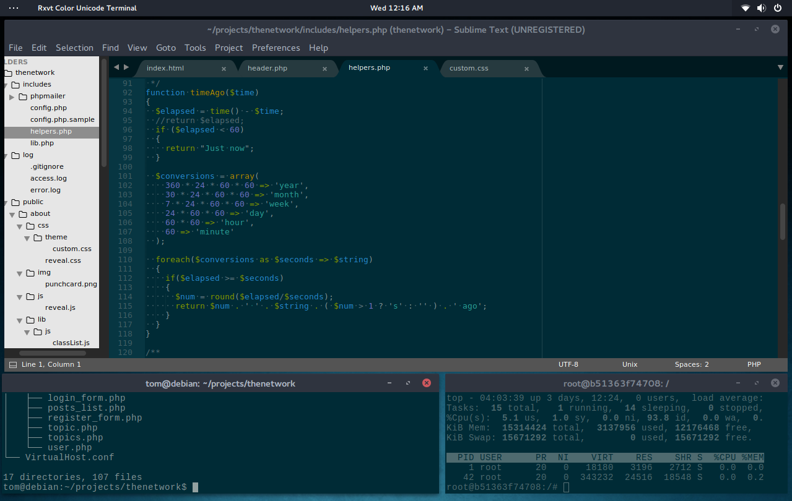
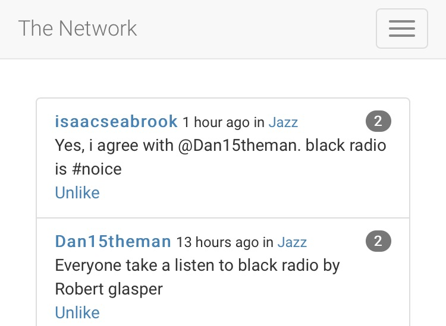

About the Network
Teddy Koker
Why Make a Social Network?
- Mostly for the experience. It's not going to be the next Facebook by any means
- I wanted to make a social network that was less socially competitive and mobile friendly
- Pursing a career in Computer Science and Cybersecurity
Slow Start
- Setting up the servers
- Creating an email system
- Documenting my work
Working
- Instead of using something like Wordpress, Weebly, etc. I wanted to do it all from scratch
- I personally wrote over 7,000 lines of code
- Even the little things require work (e.g. registering, logging in)

Difficulties
- Making sure user input is correct
- Securing everything
- Making it mobile friendly

What I Learned
- How to work with large database
- Methods of hacking websites and how to prevent them
- Creating and organizing large amounts of code
- Managing the infrastructure behind a website
The End
Feel free to login or register to demo the site!
Here is all the code for the curious or tech-savvy